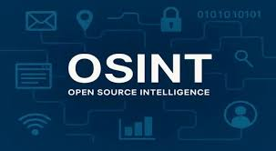
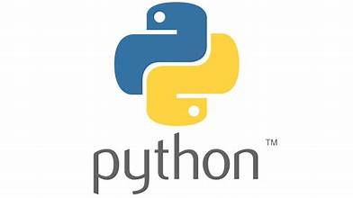
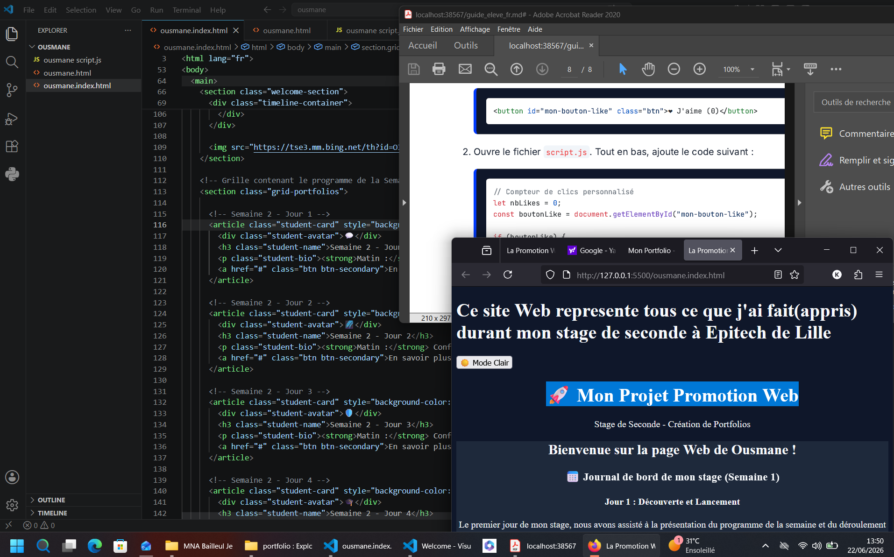

💬
Semaine 2 - Jour 1
Matin : Témoignages des étudiants.
Après-midi : Revue du portfolio.
Le premier jour de mon stage, nous avons assisté à la présentation du programme...
Dès la deuxième journée, nous avons finalisé le travail sur nos portfolios et ensuite la la cybertsecurité et Osint ...

Osint, nous avons appris à utiliser des outils d'OSINT pour collecter des informations sur des cibles fictives. C'était fascinant de voir comment les données publiques peuvent être utilisées pour créer un profil détaillé d'une personne ou d'une organisation. Nous avons également discuté des implications éthiques et légales de l'OSINT, ce qui a été très instructif.
Pour la troisième journée, nous avons débuté avec un jeu sérieux appelé "Leek Wars"...

nous permet de garder la trace des bogues dans le code du logiciel. Créer automatiquement le logiciel. Gérer les projets de logiciels.
Durant cette quatrième journée, nous avons participé à l'Atelier des Canards...

Matin : Témoignages des étudiants.
Après-midi : Revue du portfolio.
Matin : Conférences NASA et Google.
Après-midi : Jeu Morpion avec IA.
Matin : Conférence Stormshield.
Après-midi : Jeu Snake en JS.
Matin : Présentation orientation.
Après-midi : Finalisation.